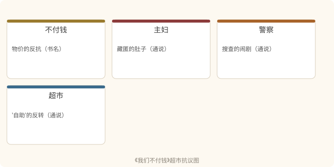

我们不能付钱？我们不付！
一、基本信息
| 作者 | 达里奥·福 |
|---|---|
| 成书/出版 | 1974年（Britannica B383：We Can't Pay? We Won't Pay! (Non si paga, non si paga!)） Dario Fo — Encyclopaedia Britannica（百科全书） |
| 国别/地区 | 意大利 |
| 时代 | 近代 · 20世纪70年代 |
| 体裁 | 戏剧 |
| 语言 | 意大利语 |

《我们不付钱》超市抗议图（主题·结构图）
二、创作背景
Britannica（B383）：We Can't Pay? We Won't Pay! (1974)——剧作列表。
Britannica（B383）：福——'a theatrical caricaturist with a flair for social agitation'。
题材（通说待核）：物价暴涨的'自助'超市——两个主妇的'掏空'与藏匿。
三、内容脉络
（通说待核）'不付钱'的超市行动与藏匿的 goods。
（通说待核）警察的搜寻与'怀孕'的假肚。
四、主要人物表
| 人物 | 身份 | 说明 |
|---|---|---|
| 安东尼娅 | 主妇 | （通说待核，B383未载） |
| 乔瓦娜 | 主妇 | （通说待核） |
五、主题与艺术特点
- '不付钱'的抗议（书名语境——通说待核）。
- 物价与家庭（通说待核）。
- commedia dell'arte 的当代（B383 交叉）。
六、影响与评论
- Britannica：We Can't Pay? We Won't Pay! (1974)（B383）。
Dario Fo — Encyclopaedia Britannica（百科全书） - Britannica：1997诺奖（B383 交叉）。
Dario Fo — Encyclopaedia Britannica（百科全书）
七、阅读建议
难点
- 闹剧的节奏。
- 1970年代意大利物价。
- 《我们不能付钱？我们不付！》中译名（《拒不付账》）待核。
- 意大利文原版。
达里奥·福喜剧首选；与《意外死亡》对读。
八、待核实
- 安东尼娅/乔瓦娜人名核对（通说）。
- 1974年首演细节待核。
- '自助'超市细节待核。
本页主要来源
相关作品：一个无政府主义者的意外死亡滑稽神秘剧日出
达里奥·福的其他收录作品：一个无政府主义者的意外死亡滑稽神秘剧我们不能付钱？我们不付！